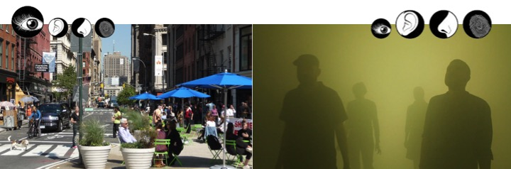
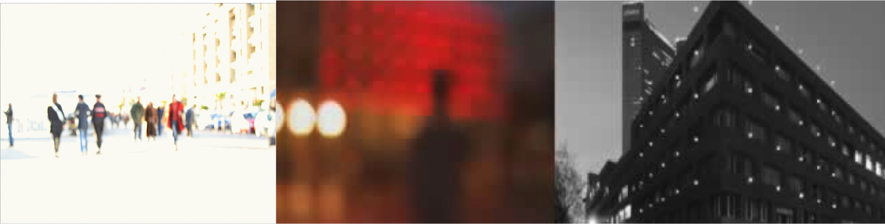
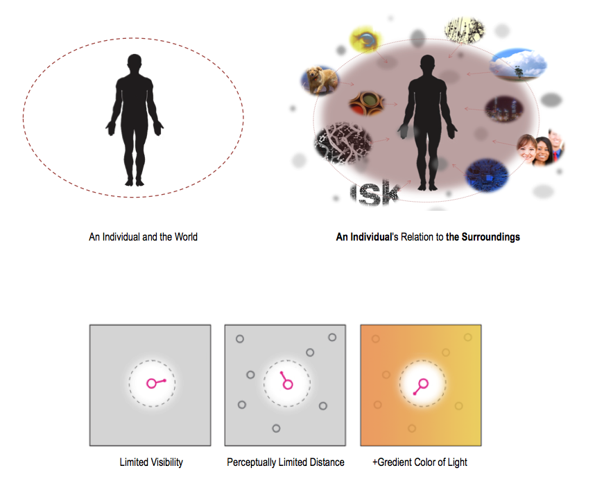

awakening your sensory
Capturing your ordinary moments by recognizing your surroundings
Mia Kim

have you ever looked around the surroundings when you walk?

what can you capture from the everyday surrounding?
Combination of complexity and clarity
_Redefines what usually creates an in- and out-side

Utopia
which is tied to our ‘now’, a potential that is actualized and transformed into reality; an opening where subject and object, inside and outside, proximity and distance are thrown up in the air and redefined.
Changeability and mobility are at the core of utopia.

total budget??
- fog machine
- arduino
- sensors to detect the motion
- lighiting system
schedule
week5: Concept development
week6: Design the interaction
week7: Development of interface software
week8: Physical model prototyping
week9: Development of physical model
week10: testing
week11: prep
August 30th: Installation
challenges and questions
What kind of sensory experience do you want people to experience?
How can you expect the other senses active?
Does this project require's live/recorded people’s participation?
Previous interactions effects the next interactions?
Does this piece look different over time?
What scale do you want to work with?
How are you going to install?
What kind of software and language you need to use?
What kind of space do I need to create it?
What material do you want to use?